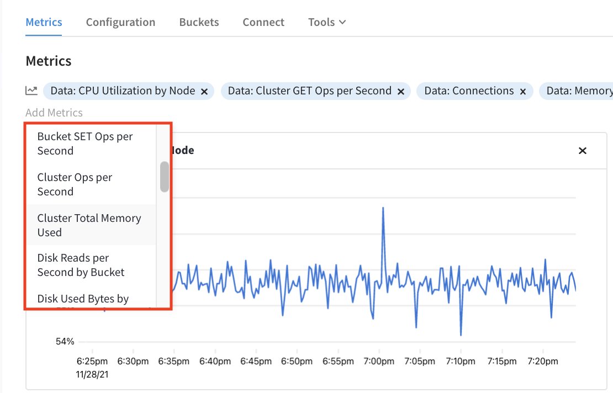

Metrics Dashboard
The Metrics Dashboard a customizable area to discover and trend cluster metrics.
Overview
The metrics from a cluster can be viewed in the Metrics Dashboard. This tool provides you with insight into cluster performance and helps you to more easily identify runtime outliers. It can also provide help in investigating specific events by allowing you to set timescales and examine multiple metrics all at the same time, as well as help you resolve cluster issues before they impact downstream applications.
Viewing the Metrics Dashboard
The Metrics Dashboard is the first thing you see when you open a cluster. Located under the Metrics tab in an open cluster, this dashboard provides you with a customizable collection of real-time metrics for the current cluster.
| If you don’t see any metrics listed, the Choose Metrics message is shown. In this message, click the Data Service link to quickly populate the Metrics Dashboard with the default metrics set. |
The Metrics Dashboard includes the following:
- Add Metrics
-
Near the top of the Metrics Dashboard is the Add Metrics bar, which displays any currently shown metrics. It also allows you to find and add new metrics to the dashboard, as well as remove any existing ones.
- Timescale
-
The timescale filter allows you to quickly switch between preselected time ranges moving backward from the current time, as well as choose a specific date and time range.
- Metric tile
-
Each metric is contained within its own tile. This tile includes a title, graph with labeled X and Y axis, data line(s), and a remove button.
Using Metrics
Each metric on your Metrics Dashboard is represented by a tile. Within this tile, you will see data from the chosen time frame. Unless it is a custom timeframe, you will also see the metrics update in real-time.
Moving your mouse cursor over a metric chart provides date, time, and resource information for the specific part of the chart you are pointing at. This allows you to see more specific data at any point in a chart. You can also zoom in on areas of a chart by clicking and dragging your cursor over the region you want to focus on.
This will update the timeframe to match your current selection for all metrics on the dashboard.
Add Metrics
The Metrics Dashboard is entirely customizable to mix and match the metrics that you want to track regularly.
-
To add new metrics, click the Add Metrics label near the top of the Metrics Dashboard.
This opens the Service menu.
-
In the Services menu, click the service for the metric that you’re adding.
This opens the Metrics menu, which lists all of the available metrics for the service that you choose.
 -
In the Metrics menu, click the metric that you want to add to the current Metrics Dashboard.
The new metric will appear at the end of the metrics list in the Add Metrics bar and the bottom of the Metrics Dashboard.
Remove Metrics
You can remove any or all metrics from the Metrics Dashboard at any time. To remove a metric tile from the dashboard itself, click the Remove Chart button () in the top-right corner of the metric in question. Alternatively, you can remove metrics from the list of metrics at the top of the dashboard. Click the small to the right of the metric name, and the metric is removed.
Choose timeframes
By default, the Metrics Dashboard will show metric data from the past hour, which updates in real-time. Using the timescale options near the top-right corner of the Metrics dashboard, you have the following preselected time ranges:
-
30 minutes
-
1 hour
-
2 hour
-
1 day
-
2 days
-
7 days
-
30 days
You can also choose a specific time range. This can be useful if you want to examine all of your selected metrics during a specific event.
| You can quickly choose a specific time range by clicking and dragging over the range in one of the charts. |
-
To open the calendar date picker, click the clock icon ().
Two dates are shown: start and end. By default, the end date is the current date and time.
-
Click the start date on the left.
-
Using the calendar picker, click the date where you want to start showing activity.
This automatically opens a time picker.
-
Choose an hour of the day from where you want to start showing activity.
The time picker uses the 24-hour clock. If you wish to select an hour from 1:00 PM to 12:00 AM, use the inner-most options.
-
Choose a five-minute interval in the selected hour where you want to start showing activity.
You will now be shown the start and end dates again, with the new start date chosen.
-
Repeat the above steps using to update the end date and time if needed.
-
Once you have finished applying the new start and end date, click on a blank area of the Metrics Dashboard.
The Metrics Dashboard will refresh to reflect the time range.
As you chose a specific date and time range in the past, the Metrics Dashboard will be static until you select one of the preselected times. You can return to the default timeframe by clicking the 1hr option.